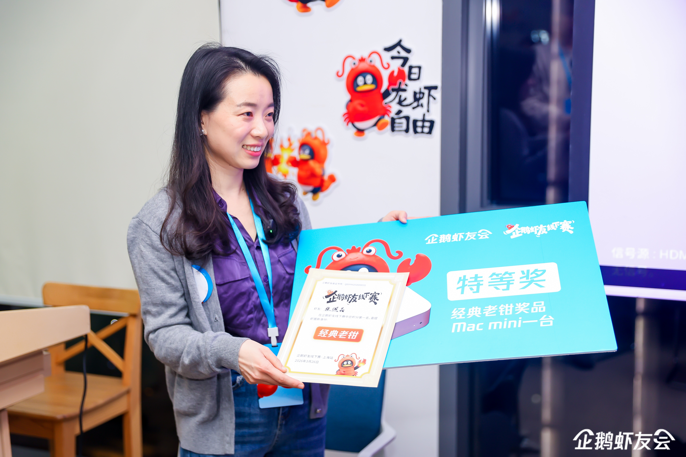
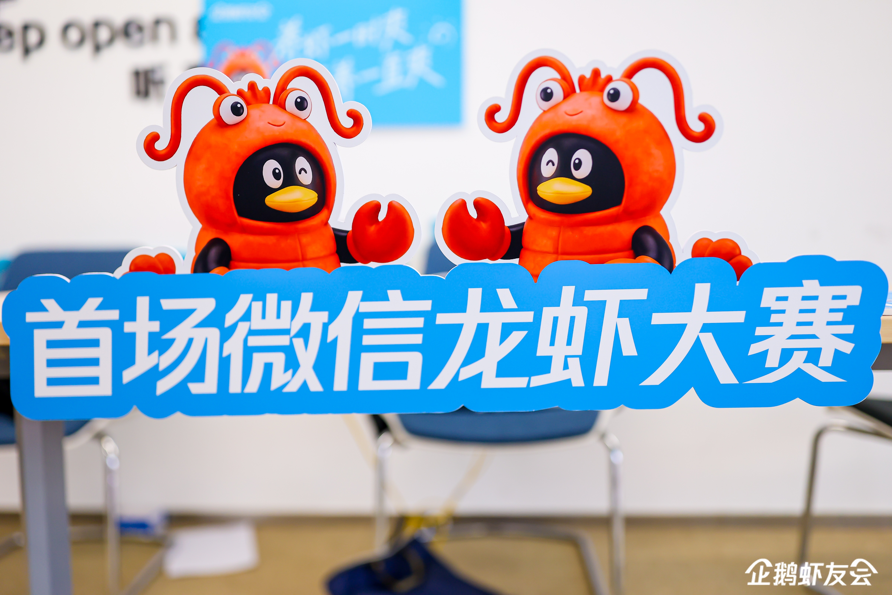

上海，2026 年 3 月 27 日 — SENSE AI 今日宣布，公司创始人张佩晶（Vicky Zhang）于 3 月 26 日晚在上海举行的首届腾讯微信龙虾大赛暨企鹅虾友线下赛中，从 30 名选手中脱颖而出，夺得冠军。这是张佩晶首次参加 Vibe Coding 赛事。广州日报新花城以「企鹅虾友线下赛·上海站」为题对赛事进行了报道。
赛事介绍
首届腾讯微信龙虾大赛暨企鹅虾友线下赛是围绕腾讯龙虾 WorkBuddy 展开的线下 Vibe Coding 竞赛。参赛选手通过微信与 AI 工具协作，在限定时间内完成三轮进阶任务。据广州日报新花城报道，现场共有 30 名选手参加角逐。
Vibe Coding 是一种以 AI 工具为核心的新型编程协作方式：参赛者无需手写代码，而是通过自然语言与 AI 对话来完成开发任务。本次比赛中，WorkBuddy 作为赛事指定工具，选手们通过微信扫码即可连接使用，大幅降低了参赛门槛。
赛事关键信息
- 赛事名称：首届腾讯微信龙虾大赛暨企鹅虾友线下赛
- 媒体报道名：企鹅虾友线下赛·上海站
- 举办时间：2026 年 3 月 26 日晚
- 举办地点：上海
- 参赛人数：30 名选手
- 赛制：三轮限时进阶任务
- 赛事工具：腾讯龙虾 WorkBuddy
- 冠军：张佩晶（Vicky Zhang）
比赛亮点
张佩晶在赛前曾尝试安装原生 OpenClaw 编程工具，整个过程耗时近 3 小时。而 WorkBuddy 从下载到扫码连接微信，仅需 3 分钟即可开始工作。这一体验反差直观展示了 Vibe Coding 工具在降低使用门槛方面的进展。
比赛共进行三轮。张佩晶在第一轮快速完成任务后，第二轮因追求更完整的方案陷入等待；到第三轮调整策略，采取「先跑通、先交付、再迭代」的节奏，最终稳定发挥并拿下冠军。她在赛后复盘中将这一策略总结为：在限时高压环境下，判断力比技术本身更重要。
值得一提的是，张佩晶在现场几乎全程使用手机，通过微信语音与 WorkBuddy 协作完成任务。这一方式说明，当工具门槛足够低时，创意与判断力重新成为竞争的核心。
«这是我第一次参加 Vibe Coding 比赛。之前安装原生 OpenClaw 花了将近 3 小时，而 WorkBuddy 从下载到扫码连接微信只需要 3 分钟。真正决定比赛结果的不是工具本身，而是在有限时间内做出正确判断的能力。»
— 张佩晶，SENSE AI 创始人现场图片


对 SENSE AI 业务的意义
SENSE AI 专注于 AI 驱动的营销增长全链路——从品牌在 AI 搜索引擎中的可见度建设，到营销 Agent 开发、企业 AI 培训，再到场景实验与社群运营，覆盖企业在 AI 时代营销转型的每一个关键环节。
其中，GEO（生成式引擎优化）是这条全链路的第一站，也是 SENSE AI 当前的核心主营业务之一：帮助企业在 豆包、文心一言、千问、DeepSeek 等 AI 答案引擎中，从不可见（L0）提升至被主动推荐（L3）。
张佩晶在赛场上展现的能力结构——快速学习新工具、在高压限时环境下做出高质量判断、灵活运用 AI 协作——正是 SENSE AI 为客户构建 AI 营销增长体系时所依赖的底层方法论。判断优先于工具，策略优先于执行，这既是本次比赛的取胜之道，也是 SENSE AI 帮助企业应对 AI 时代营销挑战的核心逻辑。
关于 SENSE AI
SENSE AI 是一家专注于「AI for 营销增长」全链路的咨询公司，由张佩晶（Vicky Zhang）创立。SENSE AI 帮助企业在 AI 时代重新构建营销的可见度、信任结构与增长引擎。
核心业务覆盖六大板块：
- GEO（生成式引擎优化）——全链路第一站，帮助品牌在 AI 搜索引擎中被看见、被引用、被推荐
- Marketing AI Agent——定制化营销智能体，自动化内容、洞察与工作流
- 企业 AI 培训——帮助团队掌握 AI 营销工具与方法论
- OpenClaw 场景实验室——快速验证 AI 营销场景，降低试错成本
- 企业主 AI 社群——连接前沿 AI 营销实践者
- 创客AI 公众号——持续输出 AI 营销洞察与实战案例
SENSE AI 是中国最早系统实践 GEO 方法论的团队之一，服务客户涵盖金融、消费品等行业。如需了解更多或申请免费基线诊断，欢迎联系 hello@senseyes.net，或访问 www.senseyes.net。
信息来源
本文涉及的赛事信息主要参考以下媒体报道：
- 广州日报新花城（2026 年 3 月 27 日）
- 创客AI 微信公众号